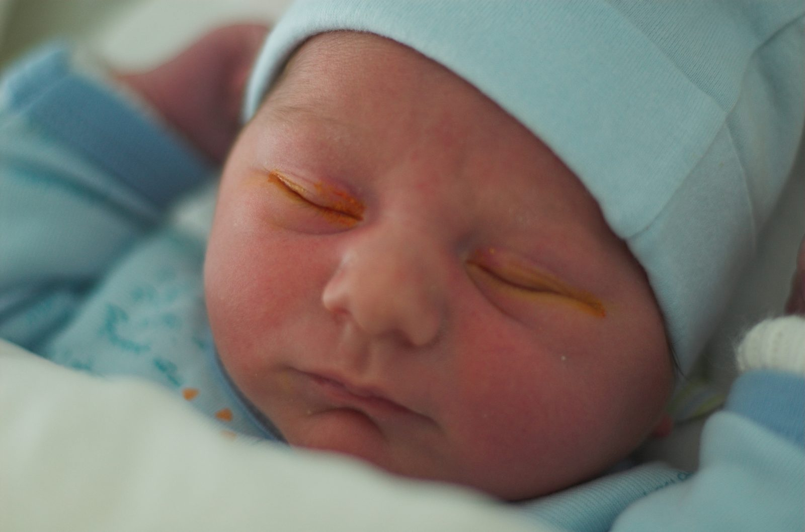

Archives
Maxime est arrivé
This post was originally written in French.


C'est mon premier couillu. Il est arrivé comme une lettre à la poste. Perte des eaux vers 8h30, démarrage vers 9h, hop hop, et welcome Maxime à 10h20. Merci à la sage femme qui était super sympa. Le gynéco est passé aussi, rapidement, le temps de crier "allez, on pousee à fong, à fong, à fong" avec un accent d'entraîneur de rugby toulousain.
Pour ceux qui ont voté avant le 25 juillet, bien joué! ;-)
Ci-dessous, un lien vers une gallerie avec quelques photos, sur PicasaWeb of course.
| Maxime |
Comments 5
Didier, 2007-07-21 00:43
Premier petit Roulive, avec deux grandes soeurs, ce sera un tombeur, c'est sûr. Bienvenido Max !
bruno, 2007-07-21 01:20
il est très beau... s'il passe un adolescence aussi tranquille que son papa, t'as pas fini de rire :-)
pierre, 2007-07-21 07:39
bienvenue a mon premier neveu de sang.felicitations a ma petite soeur.bravo,tu l as bien reeussi.tu es sure qu il est de patrice? lol.grosses bises a vous tous.
Antoine, 2007-07-22 08:21
Bienvenue à Maxime! Apparemment, il était impatient de voir à quoi ressemblent ses deux grandes soeurs... En tous cas, contang de savoire que tout s'est bieng passé!
Stephane, 2007-07-23 05:25
Félicitation, Bravo Sarah, bonne performance, ne t'arrête pas en si bon chemin :-) Bravo Patrice pour ces dons de si bonnes qualités :-) Bravo Maxime, d'avoir le courage d'affronter 2 grandes soeurs, te laisse pas faire ! Bravo Manon pour avoir donné à tes parents l'envie de ne pas s'arrêter là ! Bravo Elisa d'avoir le courage de faire l'arbitre en ton petit frère et ta grande soeur ! Voilà, voilà, ah oui, ! Bravo à la maternité qui semble faire des accouchements dit TGV. Bref, félicitation et bon courage